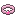
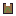
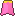
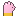
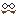
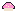
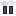
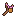
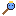
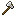

Item databaseItemdatabase
Every base type of gear. The real item rolls a rarity (more bonuses and x1.10..x1.75 base stats), a level and random bonuses; the stats below are the base at level 10. ★ = a named boss item.
Elk basistype uitrusting. Het echte item rolt een zeldzaamheid (meer bonussen en x1,10..x1,75 basisstats), een level en willekeurige bonussen; de stats hieronder zijn de basis op level 10. ★ = een benoemd baasitem.
45 items
| Item | Slot | ClassKlasse | Zone | RarityZeldzaamheid | Set | Base stats (lv 10)Basisstats (lv 10) |
|---|---|---|---|---|---|---|
 Pluisarmband | Alle klassen | De Knuffelzwammen | rolledwillekeurig | Aanvalssnelheid % 3.2 | ||
| Rozenarmbandje | Alle klassen | De Knuffelzwammen | rolledwillekeurig | Cooldownreductie % 3.2 | ||
| Klodderbroek | LegsBenen | Alle klassen | De Knuffelzwammen | rolledwillekeurig | Klodderset | Vads 36, Behendigheid 10.5, Verdediging 10.5 |
| Steelbroek | LegsBenen | Alle klassen | De Knuffelzwammen | rolledwillekeurig | Vads 54, Verdediging 21 | |
| Zwambroek | LegsBenen | Alle klassen | De Knuffelzwammen | rolledwillekeurig | Zwamset | Vads 39, Wijsheid 10.5, Verdediging 10.5 |
| Bubbelvest | ChestBorst | Alle klassen | De Knuffelzwammen | rolledwillekeurig | Vads 48, Verdediging 13.15 | |
| Klodderhesje | ChestBorst | Alle klassen | De Knuffelzwammen | rolledwillekeurig | Klodderset | Vads 45, Behendigheid 14, Verdediging 13.15 |
| Knaagvachtje | ChestBorst | Alle klassen | De Knuffelzwammen | rolledwillekeurig | Vads 78, Verdediging 23.65, Kritiek % 2 | |
| Knuffelharnas | ChestBorst | Alle klassen | De Knuffelzwammen | rolledwillekeurig | Vads 60, Verdediging 18.35 | |
 Sporenmantel Sporenmantel | ChestBorst | Alle klassen | De Knuffelzwammen | rolledwillekeurig | Zwamset | Vads 48, Wijsheid 14, Verdediging 13.15, Healkracht % 3 |
 Wortelwambuis ★ | ChestBorst | Alle klassen | De Knuffelzwammen | legendarisch | Vads 100, Verdediging 24, Elementweerstand % 5 | |
 Knuffelcapeje | Alle klassen | De Knuffelzwammen | rolledwillekeurig | Vads 42, Elementweerstand % 3.2 | ||
 Sporencape Sporencape | Alle klassen | De Knuffelzwammen | rolledwillekeurig | Vads 35, Wijsheid 7 | ||
| Kloddergrijpers | Alle klassen | De Knuffelzwammen | rolledwillekeurig | Behendigheid 7, Verdediging 7, Kritiek % 1.6 | ||
 Pluiswantjes | Alle klassen | De Knuffelzwammen | rolledwillekeurig | Kracht 7, Verdediging 7 | ||
 De Neppe Snor van de Spion ★ | HeadHoofd | Alle klassen | De Knuffelzwammen | guhddelijk | Behendigheid 12, Verdediging 11.25, Kritiek % 4 | |
 Het Klodderkroontje ★ Het Klodderkroontje ★ | HeadHoofd | Alle klassen | De Knuffelzwammen | guhddelijk | Vads 80, Verdediging 13.5, Healkracht % 8 | |
 Klodderkapje Klodderkapje | HeadHoofd | Alle klassen | De Knuffelzwammen | rolledwillekeurig | Klodderset | Vads 30, Behendigheid 10.5, Verdediging 7.85 |
 Kristalhelmpje Kristalhelmpje | HeadHoofd | Alle klassen | De Knuffelzwammen | rolledwillekeurig | Vads 60, Verdediging 18.35, Elementweerstand % 6 | |
 Lichtzwamhelm ★ | HeadHoofd | Alle klassen | De Knuffelzwammen | legendarisch | Vads 72, Verdediging 18.35 | |
 Pluishelm Pluishelm | HeadHoofd | Alle klassen | De Knuffelzwammen | rolledwillekeurig | Vads 36, Verdediging 10.5 | |
| Slijmmutsje | HeadHoofd | Alle klassen | De Knuffelzwammen | rolledwillekeurig | Vads 30, Verdediging 7.85, Elementweerstand % 3 | |
| Zwamhoed | HeadHoofd | Alle klassen | De Knuffelzwammen | rolledwillekeurig | Zwamset | Vads 36, Wijsheid 10.5, Verdediging 7.85 |
| Knuffelketting | NecklaceKetting | Alle klassen | De Knuffelzwammen | rolledwillekeurig | Vads 40 | |
 Pluisoorbel Pluisoorbel | EarringOorbel | Alle klassen | De Knuffelzwammen | rolledwillekeurig | Cooldownreductie % 3 | |
 Roze Ring Roze Ring | Ring | Alle klassen | De Knuffelzwammen | rolledwillekeurig | Kritiek % 3 | |
 Klodderstuiters Klodderstuiters | FeetVoeten | Alle klassen | De Knuffelzwammen | rolledwillekeurig | Klodderset | Vads 24, Behendigheid 7, Verdediging 5.3, Loopsnelheid % 3 |
 Mossloffen Mossloffen | FeetVoeten | Alle klassen | De Knuffelzwammen | rolledwillekeurig | Zwamset | Vads 27, Wijsheid 7, Verdediging 5.3 |
| Plakpantoffels | FeetVoeten | Alle klassen | De Knuffelzwammen | rolledwillekeurig | Vads 24, Verdediging 5.3, Loopsnelheid % 4 | |
 Rookbommetjeslaarzen ★ | FeetVoeten | Alle klassen | De Knuffelzwammen | legendarisch | Vads 30, Verdediging 11.25, Loopsnelheid % 6 | |
| Druppelboog | WeaponWapen | Pluisjager | De Knuffelzwammen | rolledwillekeurig | Behendigheid 3, Kritiek % 4, Schade 16.5 | |
 Eikelkatapult | WeaponWapen | Pluisjager | De Knuffelzwammen | rolledwillekeurig | Behendigheid 3, Aanvalssnelheid % 4, Schade 15.7 | |
| Klodderkling | WeaponWapen | Knuffelridder | De Knuffelzwammen | rolledwillekeurig | Kracht 3, Levensroof % 4, Schade 15.7 | |
 Knuffelknots Knuffelknots | WeaponWapen | Knuffelridder | De Knuffelzwammen | rolledwillekeurig | Verdediging 6, Schade 15.8 | |
 Koninklijke Klodderknots ★ | WeaponWapen | Knuffelridder | De Knuffelzwammen | legendarisch | Vads 20, Kracht 9, Schade 19.5 | |
 Kussenzwaard Kussenzwaard | WeaponWapen | Knuffelridder | De Knuffelzwammen | rolledwillekeurig | Kracht 6, Schade 16.5 | |
 Plakkerige Pluisboog ★ Plakkerige Pluisboog ★ | WeaponWapen | Pluisjager | De Knuffelzwammen | legendarisch | Behendigheid 9, Kritiek % 3, Schade 19.5 | |
 Pluisboog Pluisboog | WeaponWapen | Pluisjager | De Knuffelzwammen | rolledwillekeurig | Behendigheid 6, Schade 16.5 | |
 Pluishamer | WeaponWapen | Knuffelridder | De Knuffelzwammen | rolledwillekeurig | Kracht 3, Kritiekschade % 10, Schade 16.5 | |
| Rozenstaf | WeaponWapen | Vadsmagiër | De Knuffelzwammen | rolledwillekeurig | Wijsheid 6, Schade 16.5 | |
| Slijmboek | WeaponWapen | Vadsmagiër | De Knuffelzwammen | rolledwillekeurig | Wijsheid 3, Healkracht % 10, Schade 15.8 | |
| Snoepkruisboog | WeaponWapen | Pluisjager | De Knuffelzwammen | rolledwillekeurig | Behendigheid 3, Kritiekschade % 10, Schade 17.2 | |
 Sporenstaf van de Opperzwam ★ Sporenstaf van de Opperzwam ★ | WeaponWapen | Vadsmagiër | De Knuffelzwammen | legendarisch | Wijsheid 12, Healkracht % 5, Schade 19.5 | |
 Vlammenstaf Vlammenstaf | WeaponWapen | Vadsmagiër | De Knuffelzwammen | rolledwillekeurig | Wijsheid 3, Elementschade % 6, Schade 16.5 | |
| Zwamstokje | WeaponWapen | Vadsmagiër | De Knuffelzwammen | rolledwillekeurig | Wijsheid 3, Cooldownreductie % 4, Schade 16.5 |